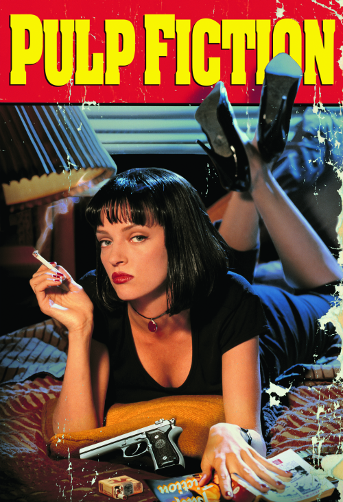
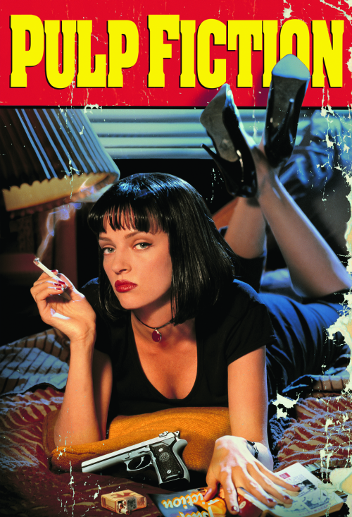

My favorite genres include futuristic dystopian, comedy, horror, and action. My appreciation for film spans over different eras, but I mainly enjoy movies from the early 1970's to present.
In addition to films, I am also deeply interested in documentaries, series, and shorts. Some of my favorites include
The Wire, Game of Thrones, and Narcos.